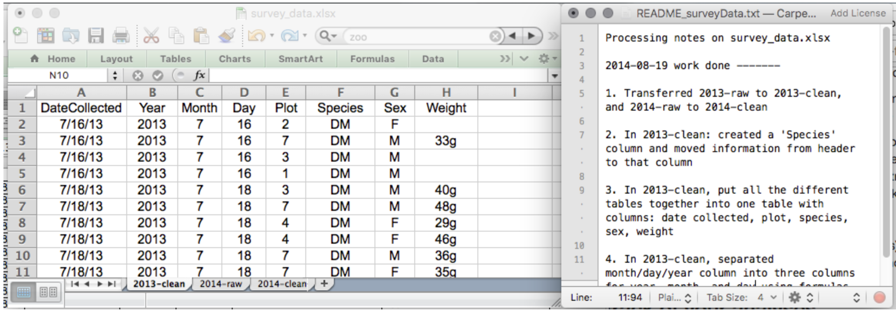
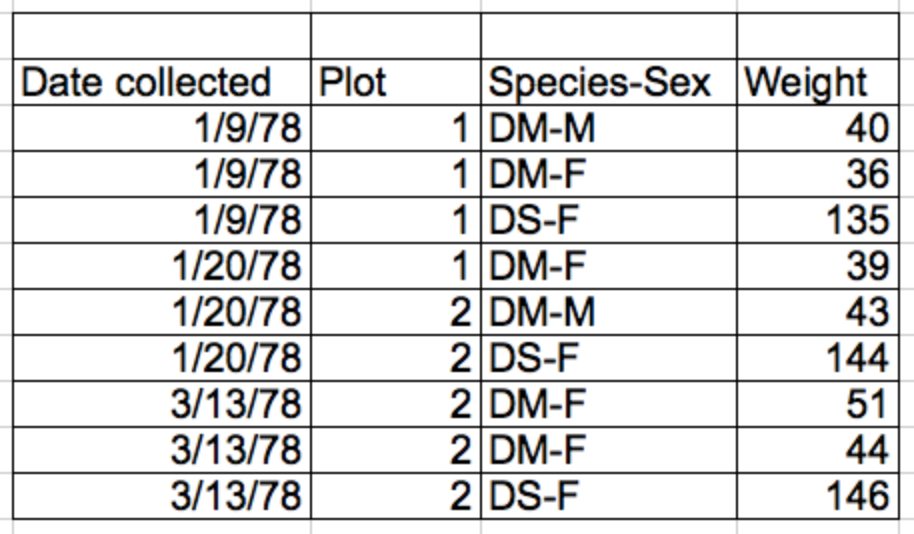

Learning Objectives
Good data organization is the foundation of your research project. Most researchers have data or do data entry in spreadsheets. Spreadsheet programs are very useful graphical interfaces for designing data tables and handling very basic data quality control functions.
Spreadsheets are good for data entry. Therefore we have a lot of data in spreadsheets. Much of your time as a researcher will be spent in this ‘data wrangling’ stage. It’s not the most fun, but it’s necessary. We’ll teach you how to think about data organization and some practices for more effective data wrangling.
We will not teach you here how to plot, do statistics, or write code in a spreadsheet program.
Data analysis in spreadsheets usually requires a lot of manual work. If you want to change a parameter or run an analysis with a new dataset, you usually have to redo everything by hand. (We do know that you can create macros, but see the next point.)
It is also difficult to track or reproduce statistical or plotting analyses done in spreadsheet programs when you want to go back to your work or someone asks for details of your analysis.
Spreadsheets are good for data entry, but in reality we tend to use spreadsheet programs for much more than data entry. We use them to create data tables for publications, to generate summary statistics, and make figures.
Generating tables for publications in a spreadsheet is not optimal - often, when formatting a data table for publication, we’re reporting key summary statistics in a way that is not really meant to be read as data, and often involves special formatting (merging cells, creating borders, making it pretty). We advise you to do this sort of operation within your document editing software.
The latter two applications, generating statistics and figures, should be used with caution: because of the graphical, drag and drop nature of spreadsheet programs, it can be very difficult, if not impossible, to replicate your steps (much less retrace anyone else’s), particularly if your stats or figures require you to do more complex calculations. Furthermore, in doing calculations in a spreadsheet, it’s easy to accidentally apply a slightly different formula to multiple adjacent cells. When using a command-line based statistics program like R or SAS, it’s practically impossible to apply a calculation to one observation in your dataset but not another unless you’re doing it on purpose.
There are circumstances where you might want to use a spreadsheet program to produce “quick and dirty” calculations or figures, and data cleaning will help you use some of these features. Data cleaning also puts your data in a better format prior to importation into a statistical analysis program. We will show you how to use some features of spreadsheet programs to check your data quality along the way and produce preliminary summary statistics.
In this lesson, we will assume that you are most likely using Excel as your primary spreadsheet program - there are others (gnumeric, Calc from OpenOffice), and their functionality is similar, but Excel seems to be the program most used by biologists and ecologists.
The most common mistake made is treating spreadsheet programs like lab notebooks, that is, relying on context, notes in the margin, spatial layout of data and fields to convey information. As humans, we can (usually) interpret these things, but computers don’t view information the same way, and unless we explain to the computer what every single thing means (and that can be hard!), it will not be able to see how our data fits together.
Using the power of computers, we can manage and analyze data in much more effective and faster ways, but to use that power, we have to set up our data for the computer to be able to understand it (and computers are very literal).
This is why it’s extremely important to set up well-formatted tables from the outset - before you even start entering data from your very first preliminary experiment. Data organization is the foundation of your research project. It can make it easier or harder to work with your data throughout your analysis, so it’s worth thinking about when you’re doing your data entry or setting up your experiment. You can set things up in different ways in spreadsheets, but some of these choices can limit your ability to work with the data in other programs or have the you-of-6-months-from-now or your collaborator work with the data.
When you’re working with spreadsheets, during data clean up or analyses, it’s very easy to end up with a spreadsheet that looks very different from the one you started with. In order to be able to reproduce your analyses or figure out what you did when Reviewer #3 asks for a different analysis, you should:
This might be an example of a spreadsheet setup:

The cardinal rules of using spreadsheet programs for data:
1) Put all your variables in columns - the thing you’re measuring, like ‘weight’ or ‘temperature’.
2) Put each observation in its own row.
3) Don’t combine multiple pieces of information in one cell. Sometimes it just seems like one thing, but think if that’s the only way you’ll want to be able to use or sort that data.
4) Leave the raw data raw - don’t change it!
5) Export the cleaned data to a text-based format like CSV (comma-separated values) format. This ensures that anyone can use the data, and is required by most data repositories.
For instance, we have data from a survey of small mammals in a desert ecosystem. Different people have gone to the field and entered data into a spreadsheet. They keep track of things like species, plot, weight, sex and date collected.
If they were to keep track of the data like this:

What is the problem with this?
Solution: Columns for variables and rows for observations, cells for data (values)
We’re going to look at a dataset that comes from observations of a small mammal community in southern Arizona. This is part of a project studying the effects of rodents and ants on the plant community that has been running for almost 40 years. The rodents are sampled on a series of 24 plots, with different experimental manipulations controlling which rodents are allowed to access which plots. We’re going to look at a small subset of the dataset that recorded individuals collected in three different plots in 2013 and four plots 2014.
Important Do not forget the first piece of advice: to create a new file (or tab) for the cleaned data, never modify your original (raw) data.
After you go through this exercise, we’ll discuss as a group what was wrong with this data and how you would fix it.
Making small changes to the way you format your data in spreadsheets, can have a great impact on efficiency and reliability when it comes to data cleaning and analysis.